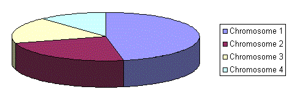
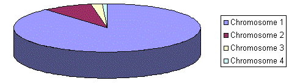
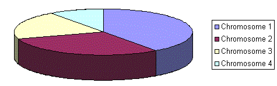
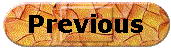
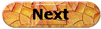

IX. Selection
Introduction
As you already know from the GA outline, chromosomes are selected from the population to be parents to crossover. The problem is how to select these chromosomes. According to Darwin's evolution theory the best ones should survive and create new offspring. There are many methods how to select the best chromosomes, for example roulette wheel selection, Boltzman selection, tournament selection, rank selection, steady state selection and some others.
Some of them will be described in this chapter.
Roulette Wheel Selection
Parents are selected according to their fitness. The better the chromosomes are, the more chances to be selected they have. Imagine a roulette wheel where are placed all chromosomes in the population, every has its place big accordingly to its fitness function, like on the following picture.

Then a marble is thrown there and selects the chromosome. Chromosome with bigger fitness will be selected more times.
This can be simulated by following algorithm.
- [Sum] Calculate sum of all chromosome fitnesses in population - sum S.
- [Select] Generate random number from interval (0,S) - r.
- [Loop] Go through the population and sum fitnesses from 0 - sum s. When the sum s is greater then r, stop and return the chromosome where you are.
Of course, step 1 is performed only once for each population.
Rank Selection
The previous selection will have problems when the fitnesses differs very much. For example, if the best chromosome fitness is 90% of all the roulette wheel then the other chromosomes will have very few chances to be selected.
Rank selection first ranks the population and then every chromosome receives fitness from this ranking. The worst will have fitness 1, second worst 2 etc. and the best will have fitness N (number of chromosomes in population).
You can see in following picture, how the situation changes after changing fitness to order number.

Situation before ranking (graph of fitnesses)

Situation after ranking (graph of order numbers)
After this all the chromosomes have a chance to be selected. But this method can lead to slower convergence, because the best chromosomes do not differ so much from other ones.
Steady-State Selection
This is not particular method of selecting parents. Main idea of this selection is that big part of chromosomes should survive to next generation.
GA then works in a following way. In every generation are selected a few (good - with high fitness) chromosomes for creating a new offspring. Then some (bad - with low fitness) chromosomes are removed and the new offspring is placed in their place. The rest of population survives to new generation.
Elitism
Idea of elitism has been already introduced. When creating new population by crossover and mutation, we have a big chance, that we will loose the best chromosome.
Elitism is name of method, which first copies the best chromosome (or a few best chromosomes) to new population. The rest is done in classical way. Elitism can very rapidly increase performance of GA, because it prevents losing the best found solution.
 
(c) Marek Obitko, 1998 - Terms of use